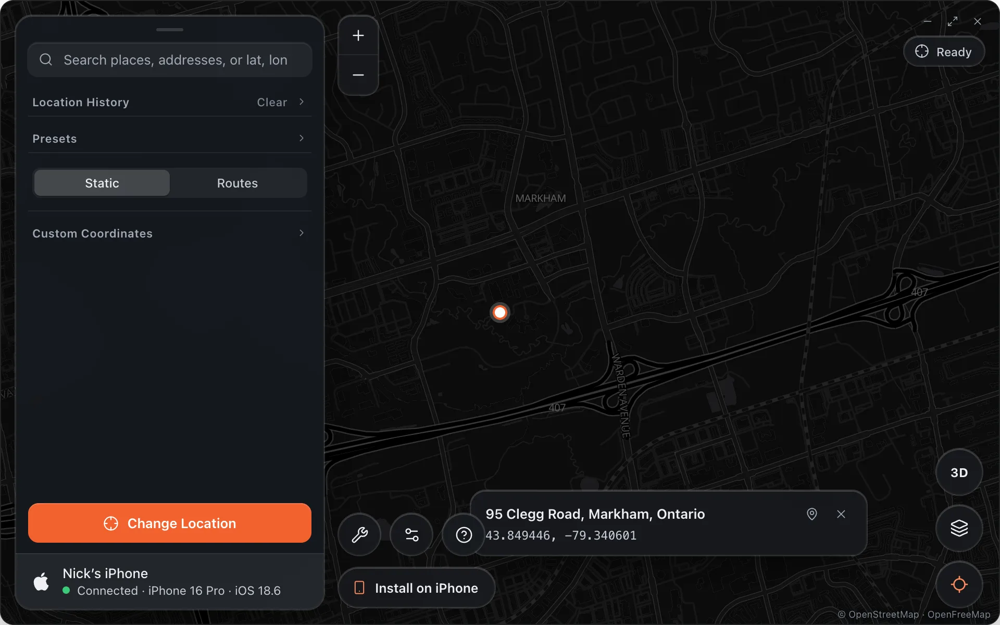
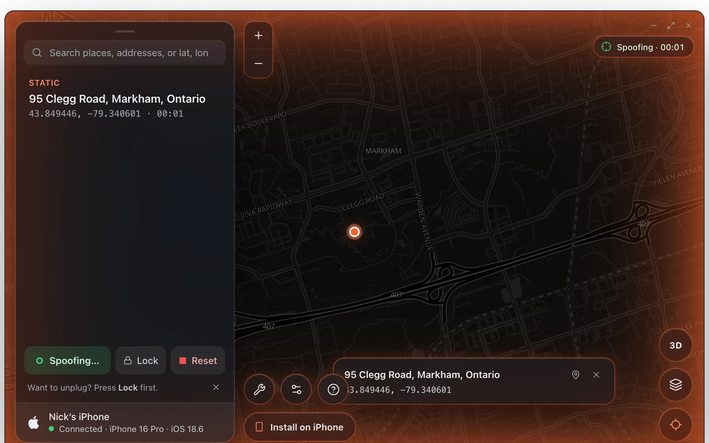
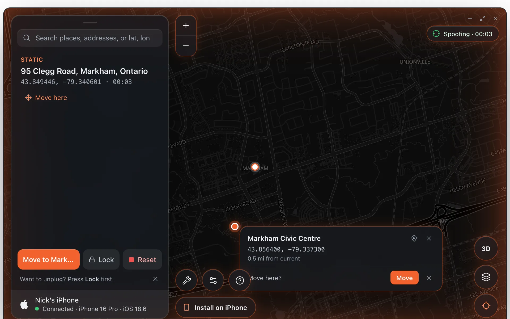
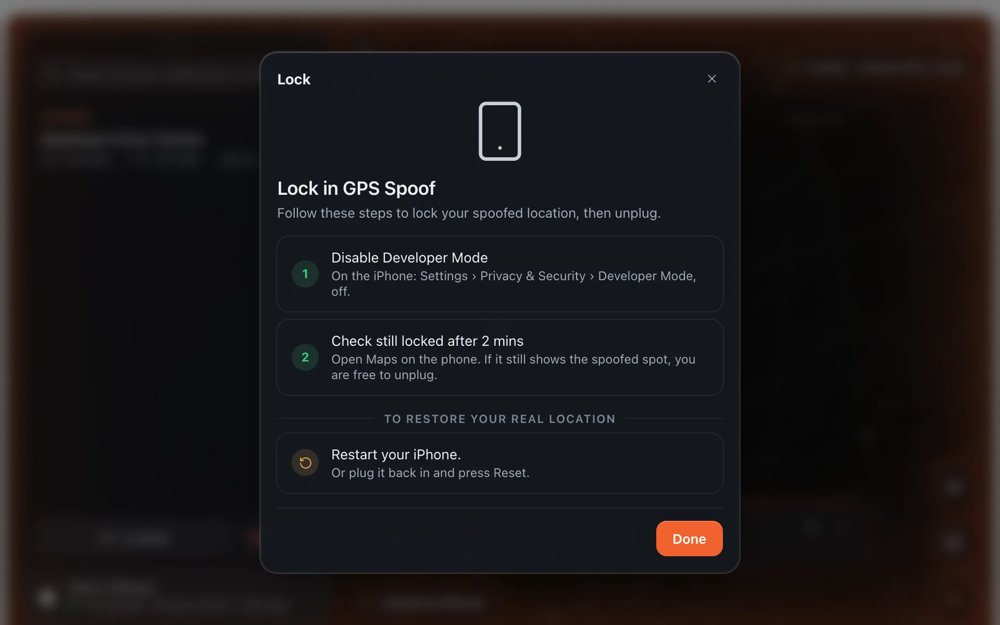

Change Location
Static Mode
Static mode holds your iPhone at one place. Pick it, press Change Location, and every app on the phone is there within a second.
Once your device is set up and you see the green Connected row, the Change Location button becomes available.

Picking a place
To quickly find a specific location, search for it in the bar at the top, click the result, and the map pin moves there. You can also click anywhere on the map, drag the pin to a more specific spot, or paste coordinates or a Google Maps or Apple Maps link into the search bar.
Use the zoom and recenter controls on the map for finer adjustments. The place card shows the address and exact coordinates; the bookmark icon on it saves the place.
The keyboard works too: W A S D or the arrow keys pan the map (hold Shift for bigger steps), and a double-click on the map changes the location to that spot in one go.
Changing location
Press Change Location. It takes 1–3 seconds. The pill at the top of the map turns green and counts how long the location has been changed, and the map glows.

Alibi keeps proving the location is live: it re-sends the fix every few seconds and turns the pill amber (Reconnecting…) the moment the phone stops answering. If the connection cannot be rebuilt, Alibi says so with the time it happened, so you are never left thinking the phone is somewhere it is not.
GPS fluctuation
Settings › Movement › GPS Fluctuation lets a held location wander within about 12 m, the way a real fix drifts, so a phone that sits still for an hour does not look frozen.
Moving without resetting
Pick a new place while the location is changed and Alibi asks Move here?. Press Move and the phone goes straight there, no reset in between. Turn on Settings › Spoofing › Move on click to skip the question.

Resetting your location
Press Reset to put real GPS back. It is instant. If an app still shows the old place, it is caching; reopening it or restarting the phone forces it to read the real location.
Keep it after unplugging
Press Lock. Alibi keeps its connection open and shows two steps: on the iPhone, turn Developer Mode off (Settings › Privacy & Security › Developer Mode), then wait two minutes and check Maps still shows the spoofed spot. When it does, unplug. The phone keeps the location until it restarts; to get real GPS back, restart the iPhone, or plug it back in and press Reset.
